UI Library &
Calling SDK

Overview
The ACS UI Library is a set of accessible, customizable React components that let companies ship branded video calling experiences on Microsoft's infrastructure without building from scratch. I was the product lead from 2022, setting strategy, product direction, and design direction across every release, working with a team of 20+ engineers to grow it into one of ACS's most-used surfaces.
The defining constraint was a dual audience. The components had to work perfectly out of the box for the end users sitting in the call, while giving developers enough flexibility to white-label, customize, and build on top. Every default had to hold up across customer contexts that had almost nothing in common, from a one-on-one telehealth visit to a 50-person enterprise meeting.
Context
Making enterprise communication buildable for everyone
Companies across healthcare, finance, and enterprise were building their own communication products (video calls, virtual appointments, customer support channels) on Microsoft's infrastructure. The raw Calling SDK gave them full control but required significant engineering depth. Most teams couldn't absorb that complexity. The UI Library and Sample Builder made the same infrastructure accessible to teams of any size.
Three entry points on the same infrastructure:
Calling SDK
Full control for teams with deep engineering expertise, but a high complexity floor that most teams weren't resourced to clear.
↑ Owned from 2025 ACS website ↗UI Library
Accessible, customizable React components built on the SDK. Reduces the engineering lift from months to days.
↑ Built & owned from 2022 Storybook ↗Sample Builder
A guided wizard for configuring and deploying a virtual appointment experience, built on the UI Library.
↑ Contributed 2021 · Owned from 2022The experiences built on the UI Library include a patient's telehealth appointment, a veteran's mental health session, a financial consultation. In those situations, the interface has to work. Good defaults are how you make that reliable at scale.

Results
11.1M+
Monthly minutes on the UI Library by end of 2025, up from 2M at the start of the year. 90% of all lifetime usage came in that single twelve-month period.
5×
Growth in a single year, adding over 100M total minutes in FY25. Three years of compounding investment in the platform.
265M
Quarterly minutes on the Calling SDK, with 21% QoQ growth. Over 1B lifetime minutes in the first year of expanded ownership.
200+
Businesses onboarded across healthcare, finance, automotive, and retail. Each inherited the defaults I shipped.
40+
Features owned end to end, from first Figma frame to public release.
1st
First RTT release across Microsoft and the first AI feature in ACS, both within a single year.
Selected Work
Core Calling UI
Device setup, video gallery, participant management, control bar, Teams interop lobby: the foundation everything else built on. The same components had to serve a one-on-one telehealth visit and a 50-person enterprise meeting.
I designed for the edge cases that break the experience. A gallery that degrades at scale fails an enterprise customer. A device setup flow that stalls on unfamiliar hardware fails the patient joining their appointment. The call control bar captures the core tension: the defaults had to feel complete without overwhelming users who needed more control. I landed on a fixed set of primary actions with overflow for everything secondary, a structure that also made customization more predictable for the 200+ businesses building on top.


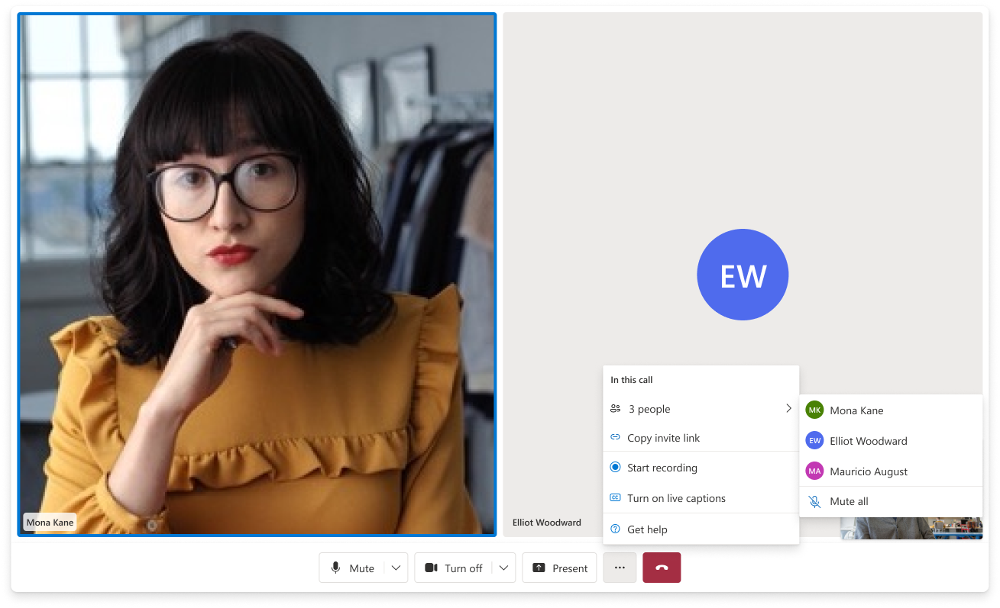
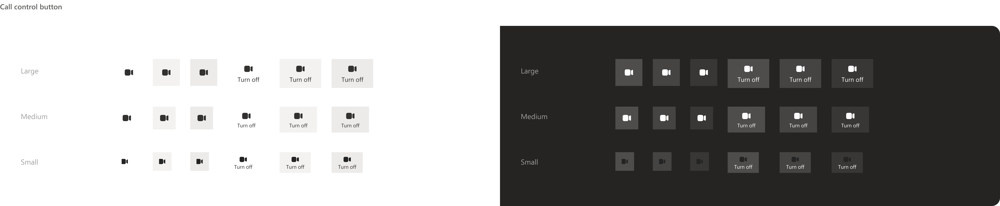
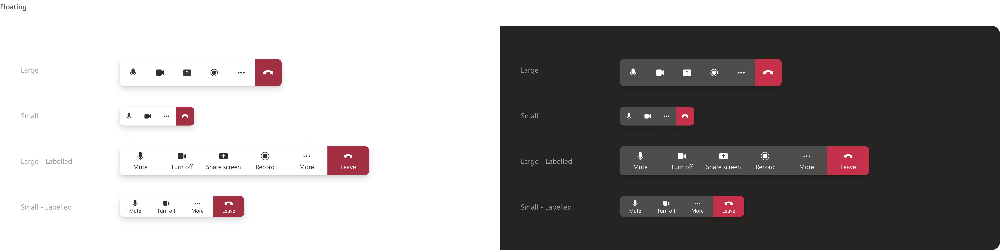
Sample Builder
Most developers arrived at the Sample Builder without a clear picture of what they needed. They knew they wanted calling, but hadn't settled on architecture or even use case. I designed the wizard to function as a discovery tool as much as a configuration tool.
The live preview was central to that. Watching a deployable experience take shape as you configure it changes how decisions get made. I first built Sample Builder scenarios as an intern and owned the product from 2022 through its mature state.
Bringing AI to Meetings with the Sample Builder ↗

Mobile
I extended the library to iOS and Android, which introduced constraints that didn't exist on desktop. Screen real estate was the central problem: video, captions, and call controls compete for the same space on a device held in one hand. I redesigned the notification and banner system so overlays wouldn't obscure the call, and reworked the control patterns for touch rather than porting them directly from desktop.
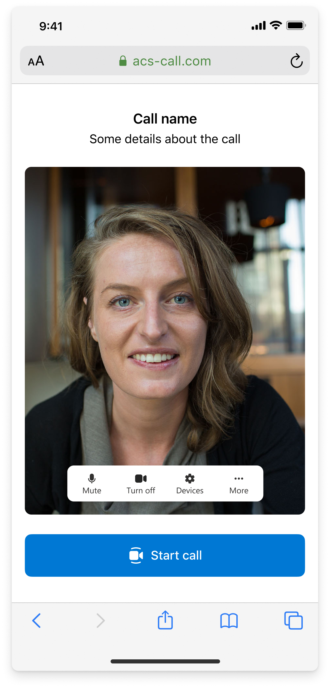
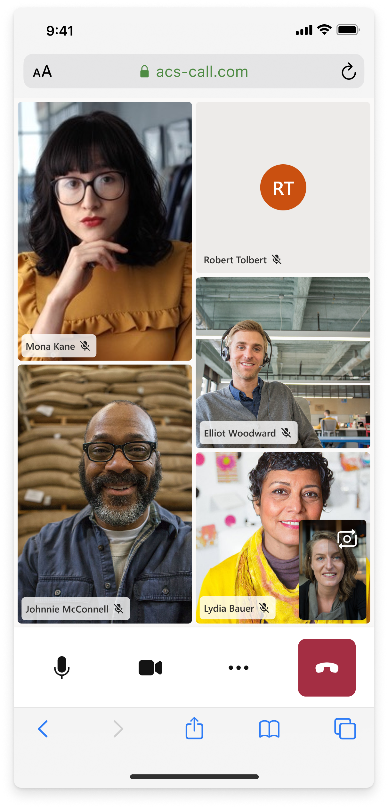
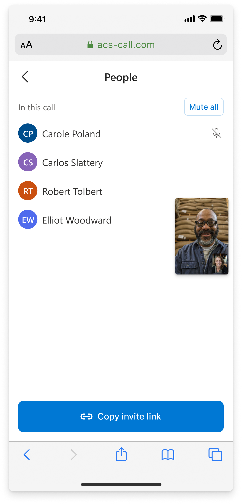
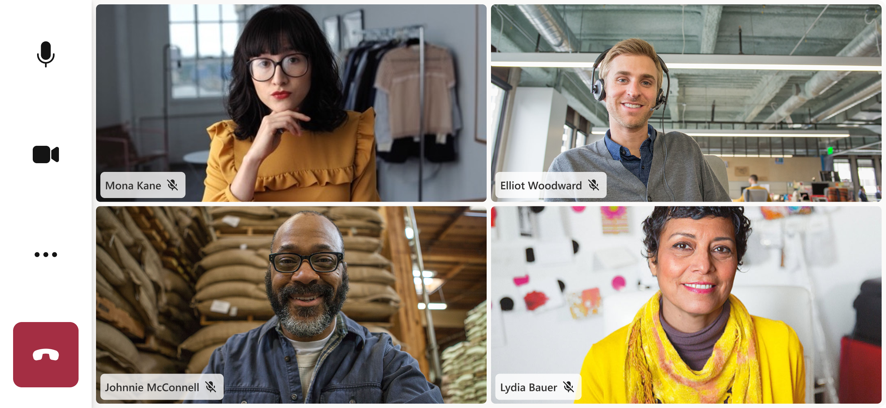
Real-Time Text (RTT)
RTT was initially scoped to the chat team. I argued it belonged in the call layer, took ownership, and shipped the first RTT implementation across Microsoft. The core interaction challenge: text appears character-by-character before a thought is complete, during a live call. I designed the model from scratch. Making simultaneous streams legible required distinguishing in-progress text from sent text, and keeping the panel from adding noise to a UI already carrying video. The feature met five international accessibility standards and shipped in time for the EU Accessibility Act compliance deadline.
Two people typing simultaneously creates in-progress text alongside already-sent text. A first approach used color to distinguish them: clear in isolation, but inconsistent under video and across the customer themes applied at deployment. The final model uses opacity. In-progress text renders subdued and snaps to full weight when the speaker pauses. Works across any theme, any lighting condition.


Call Summary
Call Summary was the first AI feature in ACS. The core design challenge was timing: the call ends but the summary isn't ready yet. I designed the loading state to communicate progress without stranding users in a blank screen.
The other challenge was relevance. A telehealth summary and a financial consultation have different shapes even from the same transcript. I structured the view to lead with the generated summary, with the full transcript accessible below. The most useful output up front, the complete record preserved underneath.


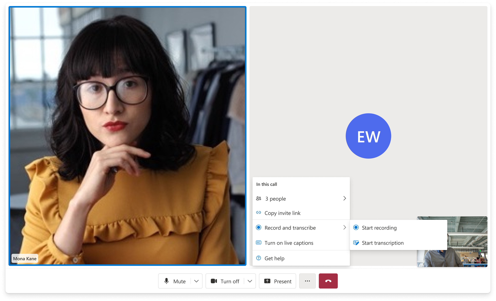
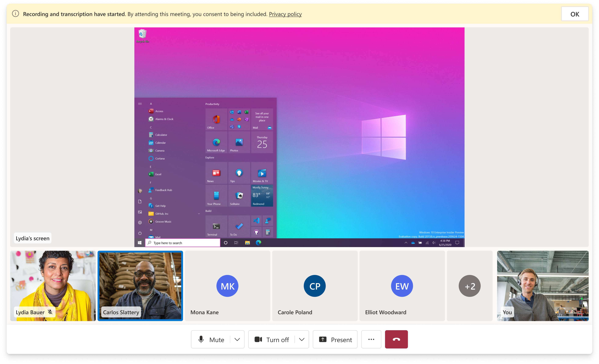
Special projects built on this
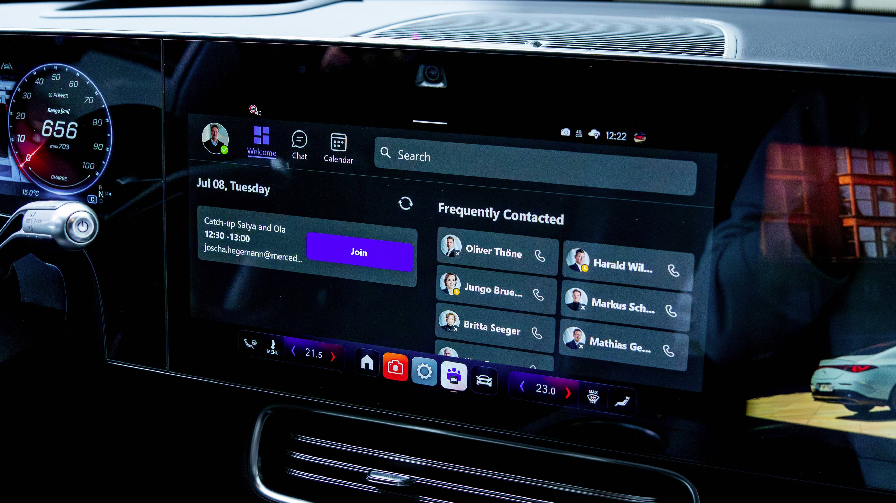
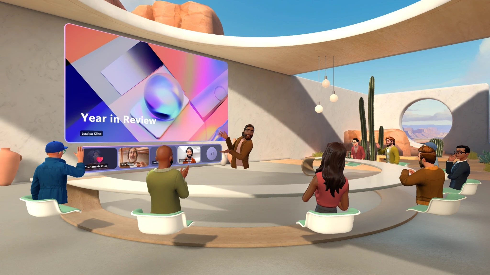
Next Project
Physicalization
of AR/XR
CMU Bachelor of Design thesis. A system of haptic and physical proxies that extend augmented reality interactions into the real world, bridging digital and material space at the interaction layer.
View case study →